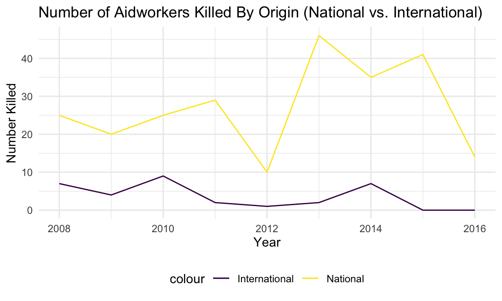
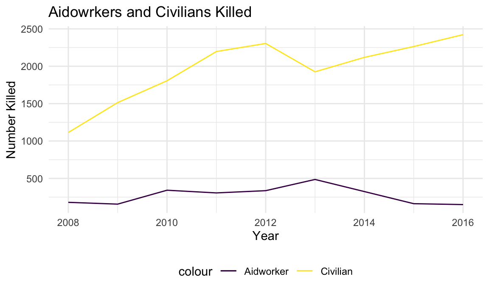
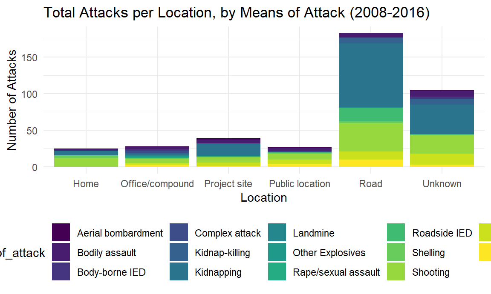

library(tidyverse)## ── Attaching packages ────────────────────────────────────────────────────────────────────────────────────────────── tidyverse 1.3.0 ──## ✓ ggplot2 3.3.2 ✓ purrr 0.3.4
## ✓ tibble 3.0.3 ✓ dplyr 1.0.2
## ✓ tidyr 1.1.2 ✓ stringr 1.4.0
## ✓ readr 1.3.1 ✓ forcats 0.5.0## ── Conflicts ───────────────────────────────────────────────────────────────────────────────────────────────── tidyverse_conflicts() ──
## x dplyr::filter() masks stats::filter()
## x dplyr::lag() masks stats::lag()library(readxl)
library(p8105.datasets)
library(hexbin)
library(patchwork)
library(leaflet)
library(lubridate)##
## Attaching package: 'lubridate'## The following objects are masked from 'package:base':
##
## date, intersect, setdiff, uniondevtools::install_github("benmarwick/wordcountaddin", type = "source", dependencies = TRUE)## Skipping install of 'wordcountaddin' from a github remote, the SHA1 (8c063135) has not changed since last install.
## Use `force = TRUE` to force installationknitr::opts_chunk$set(
fig.width = 6,
fig.asp = .6,
out.width = "90%"
)
theme_set(theme_minimal() + theme(legend.position = "bottom"))
options(
ggplot2.continuous.colour = "viridis",
ggplot2.continuous.fill = "viridis"
)
scale_colour_discrete = scale_colour_viridis_d
scale_fill_discrete = scale_fill_viridis_d##Explain
Why we chose Afghanistan… Which datasets are being used…
Using the years 2008-2016 because…. and supply code
Aidworker dataset - cleaning and tailoring
aidworker_df =
read_csv("./data/security_incidents_2020-11-25.csv") %>%
janitor::clean_names() %>%
pivot_longer(
un:other,
names_to = "org_type",
values_to = "number_orgs_affected"
) %>%
select(-number_orgs_affected)## Parsed with column specification:
## cols(
## .default = col_double(),
## Country = col_character(),
## Region = col_character(),
## District = col_character(),
## City = col_character(),
## `Means of attack` = col_character(),
## `Attack context` = col_character(),
## Location = col_character(),
## `Actor type` = col_character(),
## `Actor name` = col_character(),
## Details = col_character(),
## Verified = col_character(),
## Source = col_character()
## )## See spec(...) for full column specifications.## Warning: 3 parsing failures.
## row col expected actual file
## 1693 Latitude no trailing characters , 24.933643 './data/security_incidents_2020-11-25.csv'
## 1693 Longitude no trailing characters ) './data/security_incidents_2020-11-25.csv'
## 2804 Latitude no trailing characters , './data/security_incidents_2020-11-25.csv'aidworker_df$date <- as.Date(with(aidworker_df, paste(year, month, day, sep = "-")), "%Y-%m-%d")
afghan_aidw_df =
aidworker_df %>%
filter(country == "Afghanistan") %>%
filter(year %in% c("2008", "2009", "2010", "2011", "2012", "2013", "2014", "2015", "2016")) Internationals vs. nationals killed (is this a plot of interest?? not in the to-do list but I guess we could use it? Interesting spike)
#alisha, wondering if this would work... making two dfs one with a new var 'internationals_killed_tot' and another 'nationals_killed_tot' and then merging the datasets? I am not sure why it is making so many rows for each year? Kailey - there are multiple because it records aid workers from different organizations as separate datapoints? I'm a little confused with what to do about this data, but im going to try condensing it.
afghan_aidw_international_df =
aidworker_df %>%
filter(country == "Afghanistan") %>%
filter(year %in% c("2008", "2009", "2010", "2011", "2012", "2013", "2014", "2015", "2016")) %>%
group_by(year) %>%
count(internationals_killed) %>%
mutate(
internationals_killed_tot = n
)
afghan_aidw_national_df =
aidworker_df %>%
filter(country == "Afghanistan") %>%
filter(year %in% c("2008", "2009", "2010", "2011", "2012", "2013", "2014", "2015", "2016")) %>%
group_by(year) %>%
count(nationals_killed) %>%
mutate(
nationals_killed_tot = n
)
afghan_aidw_df_new =
left_join(afghan_aidw_international_df, afghan_aidw_national_df, by = "year") %>%
select(year, internationals_killed_tot, nationals_killed_tot) %>%
group_by(year) %>%
mutate(
yearly_internationals_killed = sum(internationals_killed_tot),
yearly_nationals_killed = sum(nationals_killed_tot)) %>%
select(year, yearly_internationals_killed, yearly_nationals_killed) %>%
slice(1, 16, 28, 40, 50, 54, 68, 86, 93)
# %>%
# aggregate(cbind(deaths_civilians, deaths_unknown) ~ year, sum) %>% view()
# this line of code isn't working (and nothing similar will work) because R is not recognizing "year" as a list - does anyone have another way of aggregating the data by year?
#UPDATE:alisha, i think this works!! it might not be 100% the right way to do it but it sums up per year!
afghan_aidw_df_new %>%
ggplot(aes(x = year, y = yearly_internationals_killed, col = "International")) +
geom_line() +
geom_line(aes(x = year, y = yearly_nationals_killed, col = "National")) +
labs(
title = "Number of Aidworkers Killed By Origin (National vs. International)",
x = "Year",
y = "Number Killed"
) 
– are these different questions?
Uppsala data upload and cleaning/tailoring (downloaded data for Afghanistan only)
#Looking at deaths among all civilians verses all aidworkers side by side
#Aidworkers:
aidw_killed_df =
afghan_aidw_df %>%
group_by(year) %>%
count(total_killed) %>%
select(year, n) %>%
mutate(
aidwk_killed = sum(n)) %>%
select(year, aidwk_killed) %>%
slice(1, 7, 11, 16, 21, 23, 30, 36, 43)
#All civilians:
afghan_upp_df =
read_csv("./data/afghanistan_uppsala.csv") %>%
janitor::clean_names() %>%
filter(year %in% c("2008", "2009", "2010", "2011", "2012", "2013", "2014", "2015", "2016")) %>%
select(year, deaths_civilians) %>%
group_by(year) %>%
count(deaths_civilians) %>%
mutate(
civilian_deaths = sum(n)
) %>%
select(year, civilian_deaths) %>%
slice(1, 19, 39, 63, 84, 104, 123, 143, 164) ## Parsed with column specification:
## cols(
## .default = col_double(),
## relid = col_character(),
## active_year = col_logical(),
## code_status = col_character(),
## conflict_name = col_character(),
## dyad_name = col_character(),
## side_a = col_character(),
## side_b = col_character(),
## source_article = col_character(),
## source_office = col_character(),
## source_date = col_character(),
## source_headline = col_character(),
## source_original = col_character(),
## where_coordinates = col_character(),
## where_description = col_character(),
## adm_1 = col_character(),
## adm_2 = col_character(),
## geom_wkt = col_character(),
## country = col_character(),
## region = col_character(),
## date_start = col_character()
## # ... with 1 more columns
## )## See spec(...) for full column specifications.## Warning: 33612 parsing failures.
## row col expected actual file
## 1 -- 47 columns 48 columns './data/afghanistan_uppsala.csv'
## 2 -- 47 columns 48 columns './data/afghanistan_uppsala.csv'
## 3 -- 47 columns 48 columns './data/afghanistan_uppsala.csv'
## 4 -- 47 columns 48 columns './data/afghanistan_uppsala.csv'
## 5 -- 47 columns 48 columns './data/afghanistan_uppsala.csv'
## ... ... .......... .......... ................................
## See problems(...) for more details.##alisha, this slice function is creating doubles for 2009 onward... i tried slicing again and taking the first of each double and got the same thing returned... very confused... doesn't seem to create and issue for the plot but still might want to fix?
afghan_upp_df %>%
ggplot(aes(x = year, y = civilian_deaths, col = "Civilian")) +
geom_line() +
geom_line(data = aidw_killed_df, aes(x = year, y = aidwk_killed, col = "Aidworker")) +
labs(
title = "Aidowrkers and Civilians Killed",
x = "Year",
y = "Number Killed"
) 
#SHCC Afghanistan dataset (need to bring in multiple years)
shcc2018_df =
read_excel("data/2018-shcc-attacks-data.xlsx", skip = 1) %>%
janitor::clean_names() %>%
rename_at(vars(matches("number_")), ~ str_remove(., "number_")) %>%
filter(country_name == "Afghanistan") %>%
mutate(tot_hc_workers_affected =
affected_healthworker_killed +
affected_healthworker_sgbv +
affected_healthworker_arrested +
affected_healthworker_injured +
affected_healthworker_kidnapped) %>%
mutate(tot_hc_facilities_affected =
impact_health_facility_num +
event_health_facility_destroyed_num +
event_health_facility_damaged_num +
impact_health_facility_armed_entry_num +
impact_health_supplies_taken_num +
impact_health_facility_occupation_num
) %>%
mutate(tot_hc_transport_affected =
impact_health_transport_destroyed_num +
impact_health_transport_damaged_num +
impact_health_transport_abducted_num)
# these columns are just straight up full of N/As...........
shcc2018_df %>%
ggplot(aes(x = date_occurrence, y = affected_healthworker_killed)) +
geom_line() +
geom_line(data = shcc2018_df, aes(x = date_occurrence, y = event_health_facility_destroyed_num)) +
labs(
title = "Aidowrkers and HCFs Destroyed",
x = "Date",
y = "Number Killed"
) ## Warning: Removed 10 row(s) containing missing values (geom_path).## Warning: Removed 97 row(s) containing missing values (geom_path).## geom_path: Each group consists of only one observation. Do you need to adjust
## the group aesthetic?
# If we want to do a bar graph comparing total HCWs affected vs. total healthcare facilities affected in 2018 and 2019? Something is very off here.......
shcc2019_df =
read_excel("data/2019-shcc-healthcare-afghanistan-data.xlsx", skip = 1) %>%
janitor::clean_names() %>%
rename_at(vars(matches("number_")), ~ str_remove(., "number_")) %>%
filter(country_name == "Afghanistan") %>%
select(-"x12") %>%
mutate(
tot_hc_worker_affected =
affected_healthworker_killed +
affected_healthworker_kidnapped +
affected_healthworker_threatened +
affected_healthworker_injured +
affected_healthworker_assaulted +
affected_healthworker_sgbv
) %>%
mutate(
tot_hc_facilities_affected =
indicator_health_facility_destroyed_num +
indicator_health_facility_damaged_num +
indicator_health_facility_armed_entry_num +
indicator_health_supplies_taken_num
) %>%
mutate(
tot_hc_transport_affected =
indicator_health_transport_destroyed_num +
indicator_health_transport_damaged_num +
indicator_health_transport_abducted_num
)## New names:
## * `` -> ...5
## * `` -> ...6
## * `` -> ...7
## * `` -> ...12